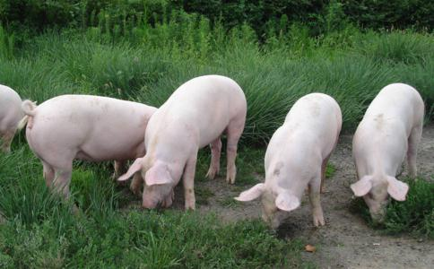

自序 轮回
人畜轮回寻常见，死后变猪更普遍。
吃它总要被它吃，血债必用血来还。
户户有本血泪账，人人有座业障山。
成群结队堕
参透人情冷透心，看破轮回惊破胆。
冤冤相报何时了，不向净土更凄惨。
普劝
弥陀授记成佛道，法界遍开七宝莲！
常念阿弥陀佛，方为至真至善；
往生
抗战时期有个
这个修行人一看，陡然一惊，觉得自己太不规矩，赶紧缩回身子。里面一个产婆模样的妇人，看到他，笑嘻嘻的招呼他进去。他因严守戒律，怎么也不肯进去，赶紧往回走。接生婆跑过来拉他，正拉扯时，修行人一使劲挣脱，忽然回过神来，自己的肉体还在屋里打坐。
他回想方才的境界，觉得不像一般的
修行人一听，吓出了一身冷汗！修行这么多年，差点投胎为猪。要不是当时心存
有位大师曾经说过，得人身难，失人身易，现在大多数人来生的果报是三恶道。因为命终时中阴境现前，你所见所闻，都是业力所感、鬼神所变的幻象，看母猪为美妇，视地狱为华屋，抱铜柱如胴体……若有丝毫的贪恋念头，就立即随业
灵魂出窍，差点变猪；
轮回路险，难出三涂；信愿念佛，求生净土！
那摩阿弥陀佛！ 那摩
《
（人死后成为中阴身即鬼魂，如三岁小孩，迷迷瞪瞪，不能自主，只能随业力漂泊受报。所以我们一定要念佛求生净土，否则一失人身，万劫不复。生死事大，吹牛没用。末法之世，唯有信愿念佛，求生净土，方能
梦参老和尚开示：
《
现在的人要想知道这个知道那个，就求鬼神，鬼神正好就乘虚而入了，他正想找你，你去找他他更高兴。很多人不信佛菩萨，反而信鬼神，从《
民国初年，黑龙江省的乡下，有一位十二、三岁的小姑娘，她大概是严重的感冒，发了高烧。农村缺医少药，她母亲就给她喝点姜汤、
她昏迷当中，就看到有一辆大车，几匹马，几匹骡子拉的那种大板车。她看了车上坐了四、五个人，有小男孩也有小女孩，那些人就要她上来玩，她也胡里胡涂的，忘了她是害病；在神识昏迷的时候，就这样跳上车一块去玩。这辆车就进了村，到西头一个院子里，她突然间这么一惊醒，就听人家喊“小狗下了五、六个”，她一听自己变狗了，很害怕！别的小狗都抢奶嘴去吃奶，她不吃，她憋气，这一憋气她又死了。在她死的时候又听到这家小孩子喊“这只小狗死了”，她这边死了，她妈妈看看她发汗没有，被头一揭开，她又活了。她跟她妈妈说：“我刚才变成小狗了！”她妈妈说：“你烧得胡涂了，怎么变了狗了？”她说：“您到村西头的谁家谁家看看，他家的狗下了五、六个小狗仔，其中有一只狗的皮跟我穿的这件衣服一样，黑底白花的就是我，您去看看！”她妈妈就去看了，果真如此！
那时我听到了这件事也不当一回事，后来
过去有一位无果禅师，深居幽谷，参禅悟道，心不旁骛，二十余年都由山下一位
护法居士让家人做一件衲衣送给禅师，妻子女儿立即着手剪裁缝制，每缝一针就念一句阿弥陀佛圣号。做好以后，又偷着包上四锭马蹄银，送给禅师做路费。禅师接受了护法居士一家的布施，准备第二天下山。是夜仍坐禅入定养息，忽至半夜，进来一青衣童子，手执一旗，说道：“奉命邀请禅师上莲华台！”随后便有数人抬着豪华漂亮的莲花大轿，鼓瑟吹笙，一路欢呼，来到禅师面前。
禅师心中暗想：我修
青衣童子又再三劝请，说机会难得，切勿错过！如果禅师不去，我们也无法回去交差啊！见无果禅师依然不动， 青衣童子便和一群随从上来强拉硬拽。无果禅师拗不过他们，只好随手拿起身边的一把引磬，插在莲花台上，说：“这是我的法宝，让它代表我好了，你们回去交差吧。”青衣童子和随从乐人，便抬轿鼓吹而去。
第二天一大早，禅师正要动身下山，听见急促的敲门声。开了门，见护法居士手拿一把引磬，惶惶张张地说道：“师父，这不是您的东西吗？怪了，昨晚我家中的母马临产，生了一个死胎，马夫用刀割开胎盘，发现里面有一个引磬。我认出这是禅师之物，所以赶紧送来。只是纳闷，为什么会落入马腹中呢？”
无果禅师听后，大惊失色，汗流浃背，深信业力不可思议，赶紧跪在佛像前叩头忏悔。并说一偈：
“一袭衲衣一张皮，四锭元宝四个蹄；若非老僧
禅师说罢，将衲衣白银归还居士，一别而去无音讯。
经云：“假使百千劫，所作业不亡；因缘会遇时，果报还自受。”
谨以此文痛切忏悔本人与全家及法界众生过去所作的一切罪业，
我早年在台湾高雄讲经，在高雄有个小镇叫草衙，那里有一个庙，里头有一条小狗。这个小狗通灵性，每天寺庙里头的早晚课诵它都来，一堂课都不缺。可是每到打
有一天，有个外地的法师从那里经过，他
这个小狗，就是这个庙里以前的住持和尚，死了之后投胎到他的庙里。为什么他没能修成功？愚痴的习气没有去掉。可见，修行不是件容易事情，一定要改习气才管用！
所以诸位要晓得，有的时候在寺庙里看到的小狗、小猫，甚至于老鼠、蟑螂，许多都是寺庙以前的
在家也不例外！家里养的这些动物，可能都是过去的老人转世，因为他舍不得离开这个家，他留恋这个家。留恋又能怎么样？他罪业深重，得不到人身，
有的时候，它对前世的事还不忘，它自己还感觉到，家里的儿孙对它不
我们修行，要怎么修？首先把欲望舍掉。
我们的欲望是什么？贪嗔痴慢、自私自利、名闻利养、五欲六尘的享受。
佛为什么叫我们舍尽这一切欲望？我们无始劫以来生生世世搞生死轮回，就是欲望在作祟。
我们为什么会搞轮回？这是因为不了解事实真相。
事实真相是什么？佛告诉我们：“一切有为法，如梦幻泡影，如露亦如电，应作如是观。”真正明了这个事实真相，欲望就没有了。没有欲望，就没有轮回了。
幻影附记：前几年去过几次云居山真如寺（
难怪有人说：“施主一粒米，大如须弥山；今生不了道，披毛戴角还。”出家人修行更要小心啊！
五、了情和尚投猪胎，护法金刚巧搭救会性法师讲述
一盏孤灯照楼台，上床脱却袜和鞋。
识神渺渺随梦去，未知明朝来不来？
清朝时，南海普陀山有一位了情和尚，他的出家因缘很有趣味，就是因为作梦以后才出家，他作了什么梦？他在家时是一位信佛青年，每日必诵一卷《金刚经》。有一天晚上在睡觉，梦到自己在门前的街上走。见到一辆马车，车上有六位少女，长得很美，招呼他：“来啊！来啊！车上还很宽，起来车上一起坐。”了情和尚那时还没出家，觉得有趣就上车坐。车子到了一个地方就停住了，六位女子跳下来。见到有一个门，门很矮小。六位少女进去后，他也跟在后面爬进去。进去以后，里面有一位金刚神（诵金刚经者的护法神）像韦驮菩萨一样手拿金刚杵，见他进来，赶他出去：“你不能进来！快出去！出去！”但是他硬要进去，金刚神著急了：“叫你不可来，你硬要来，诵《金刚经》的人，不许来这里，叫你出去，不出去就打！”说着用金刚杵从他的头打下去，他非常痛，当下就昏过去了。醒过来时就在床上，背部都是汗。鼻孔闻到的气味很不好，像是猪粪味。他就觉得很奇怪，心中很不安。看看已过半夜，睡不著了，就起来诵《金刚经》，直到天亮。
天亮后，他就去找昨天晚上作梦去的地方，就在邻近的隔壁找到了，原来那个小门是一个猪圈外面的排水沟，那里面猪的粪尿从里面流出来。他觉得很奇怪，就去问主人说：“请问，你们家里昨天晚上有人来过吗？”“没有人来啊！”“可是我明明看到七个人从你们猪舍水沟里进去，那里面是有什么？”“是这么回事！我养猪嘛，昨天晚上我家的母猪生了七只猪，六只小母猪，一只小公猪，可惜那只小公猪一生下来就死了。”
他一听害怕了，就想弄个明白：“你带我去看看好吗？那死去的还在吗？”“还在，我就把它放在旁边，已经死去了！”他进去一看，知道那只死的小公猪就是他，吓得汗流浃背，赶快离开了，心里想：真危险！真危险！昨天晚上若不是金刚神告诉他说：‘诵金刚经的人不能来。’用金刚杵从头上打醒了他，现在他就成为一只小猪了！
就这样他生起了出离心，到普陀山去出家。普陀山的方丈问他：“你为什么要出家？”他就将亲身经历过的情形说了，老和尚听后，觉得他很有善根，就为他取了一个法名叫了情，所以人称“了情和尚”。
大家一定要注意，尤其是青年，见到少女叫你，你可别答应哟！这就需要锻炼到作梦中会念佛。作梦中若不会念佛，第六
四川军阀、二十三军军长潘文华①嗜色如命。他的府内妻妾成群，他贪恋女色，过著花天酒地、腐朽糜烂的
有一年夏天，赤日炎炎，暑气灼人。晚上，潘文华在似睡非睡中，看见九个绝色少女，貌似
次日，早饭后，他暗自带上两名勤务兵，按照梦中的行程，过街穿巷，步出城外，约行四里许，果然有一户竹林茅舍农家，内有两个男女老人。他问道：“二位老人，你们家中昨夜发生什么事情没有？”二位老人异口同声地说：“没有发生什么大事，只是我们养的大母猪不走运，昨夜下了十个小猪，九个奶豚，一个牙猪，可惜那个牙猪扳到粪塘淹死了！”潘文华一听，大惊失色，左顾右盼，一切情景跟梦中所见经历相同，真是怪事！他脸上佯装镇静，口称察看农民生活，带上勤务兵回去了。
过后，他向一位知己人说：“我贪色，梦变猪好危险！好危险！不是几扳滚下粪塘，我就死啦！梦与现实相符合，女子变奶豚，男子变牙猪，真奇怪！看来美色是不能贪恋的。”那位善意的知心人，语重心长劝他说：「朱夫子治家格言中说『纵对如花似玉之貌，定存若姊妹之心』。《
诗云：
贪花好色罪弥天，折福短寿苦无边。
奇男倚天擎慧剑，英雄定过美人关！
注①潘文华（1886—1950）号仲三，四川仁寿人。四川陆军速成学堂毕业，国民党高级将领、二级陆军上将。历任川军教导师师长兼重庆市长、国民党第7战区23军军长、28集团军总司令兼川陕鄂边区绥靖公署主任、西南长官公署副长官，1949年12月率部在四川彭县起义。后任西南军政委员会委员。1950年11月16日在成都病逝。